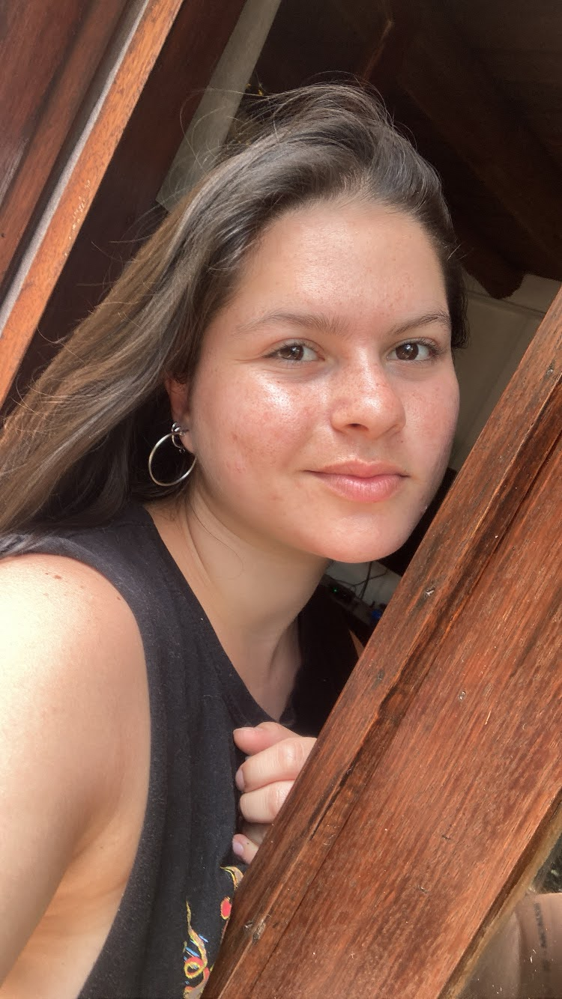

Acerca de mi
Bienvenido a mi primer pagina web. Aquí aprenderas más sobre mi.
Mi nombre es Lucia, soy de Montevideo, Uruguay y soy hincha de Defesnor. Tengo 2 hermanos y una perrita llamada Violeta que es lo mejor que me pasó en la vida. Me gusta dormir, ver futbol y tomar mate.
